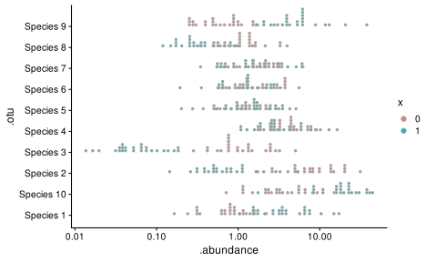
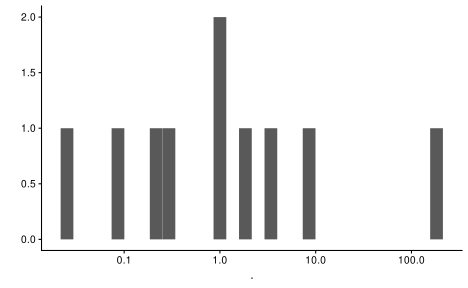
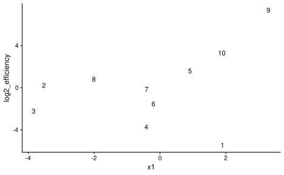
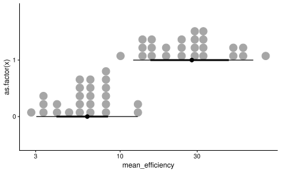
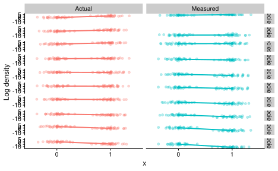
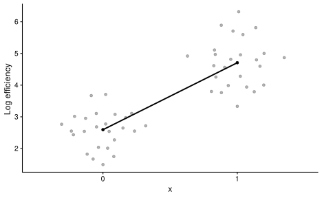
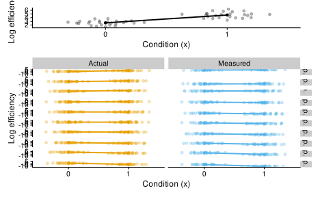
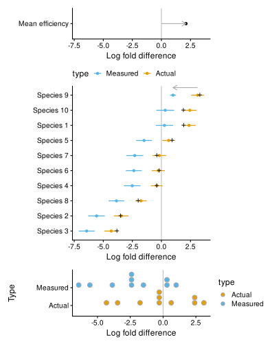
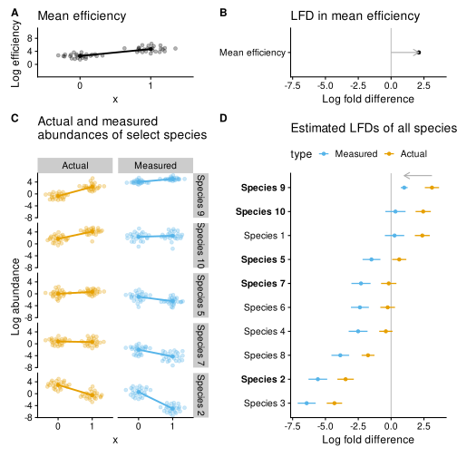
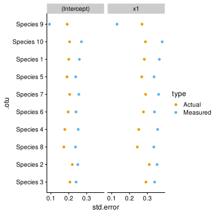

Simulate an example of how bias impacts a regression analysis.
Log abundances are independent and follow a simple linear model,
log abundance = a_0 + a_1 * X + epsilonn_samples <- 50
x <- c(
rep(0, n_samples / 2),
rep(1, n_samples / 2)
)
X <- rbind(1, x)
Sigma <- diag(1, nrow = n_species)
rownames(Sigma) <- colnames(Sigma) <- species
a_0 <- MASS::mvrnorm(
mu = rep(0, n_species),
Sigma = diag(1, nrow = n_species)
)
a_1 <- MASS::mvrnorm(
mu = rep(0, n_species),
Sigma = diag(1, nrow = n_species)
)
a <- cbind(a_0, a_1)
names(a_0) <- names(a_1) <- rownames(a) <- species
epsilon <- MASS::mvrnorm(
n = n_samples,
mu = rep(0, n_species),
Sigma = diag(0.5, nrow = n_species)
) %>%
t
y <- a %*% X + epsilon
colnames(y) <- str_glue("sa{1:n_samples}")
For the data frame of true coefficients, convert from log-e to log-2.
true_coeffs <- list('(Intercept)' = a_0, x1 = a_1) %>%
map_dfr(enframe, ".otu", "truth", .id = "term") %>%
mutate(across(truth, ~ . / log(2))) %>%
print
#> # A tibble: 20 × 3
#> term .otu truth
#> <chr> <chr> <dbl>
#> 1 (Intercept) Species 1 -0.0905
#> 2 (Intercept) Species 2 2.91
#> 3 (Intercept) Species 3 -0.137
#> 4 (Intercept) Species 4 2.18
#> 5 (Intercept) Species 5 -0.153
#> 6 (Intercept) Species 6 0.583
#> 7 (Intercept) Species 7 0.913
#> 8 (Intercept) Species 8 0.524
#> 9 (Intercept) Species 9 -0.815
#> 10 (Intercept) Species 10 1.98
#> 11 x1 Species 1 1.90
#> 12 x1 Species 2 -3.52
#> 13 x1 Species 3 -3.83
#> 14 x1 Species 4 -0.410
#> 15 x1 Species 5 0.917
#> 16 x1 Species 6 -0.192
#> 17 x1 Species 7 -0.402
#> 18 x1 Species 8 -2.00
#> 19 x1 Species 9 3.30
#> 20 x1 Species 10 1.88sam <- tibble(.sample = colnames(y), x) %>%
mutate(across(x, factor))
actual_abun <- phyloseq(
otu_table(y, taxa_are_rows = TRUE) %>% transform_sample_counts(exp),
sample_data(sam)
)
actual_abun %>%
as_tibble %>%
ggplot(aes(y = .otu, x = .abundance, fill = x)) +
scale_x_log10() +
stat_dots()

Draw efficiencies from a log normal distribution; set relative to the geometric mean efficiency.
log_efficiency %>% summary
#> Min. 1st Qu. Median Mean 3rd Qu. Max.
#> -3.7952 -1.4314 0.0123 0.0000 0.9551 5.0904#> [1] 7226.731efficiency %>% qplot + scale_x_log10()

To create an association of log mean efficiency and the covariate, I will set set it so that the species with the largest slope coefficient also has the largest efficiency. This scenario is inspired by the leopold2020host and brooks2015thet experiments.
Data frame with all species parameters,
species_params <- true_coeffs %>%
pivot_wider(names_from = term, values_from = truth) %>%
rename(intercept = '(Intercept)') %>%
left_join(efficiency %>% enframe('.otu', 'efficiency'), by = '.otu') %>%
mutate(log2_efficiency = log2(efficiency)) %>%
print
#> # A tibble: 10 × 5
#> .otu intercept x1 efficiency log2_efficiency
#> <chr> <dbl> <dbl> <dbl> <dbl>
#> 1 Species 1 -0.0905 1.90 0.0225 -5.48
#> 2 Species 2 2.91 -3.52 1.15 0.200
#> 3 Species 3 -0.137 -3.83 0.213 -2.23
#> 4 Species 4 2.18 -0.410 0.0748 -3.74
#> 5 Species 5 -0.153 0.917 2.98 1.58
#> 6 Species 6 0.583 -0.192 0.339 -1.56
#> 7 Species 7 0.913 -0.402 0.892 -0.165
#> 8 Species 8 0.524 -2.00 1.73 0.787
#> 9 Species 9 -0.815 3.30 162. 7.34
#> 10 Species 10 1.98 1.88 9.62 3.27species_params %>%
ggplot(aes(x1, log2_efficiency)) +
geom_text(aes(label = str_extract(.otu, '[0-9]+')))

Question: Is it true that the first species is driving the association?
The measured (i.e. estimated) proportions and abundances are given by perturbing the actual abundances by the efficiencies, and normalizing to proportions or to the original (correct) total.
mean_eff %>%
ggplot(aes(y = as.factor(x), x = mean_efficiency)) +
scale_x_log10() +
stat_dotsinterval()

p_species_all <- abun %>%
ggplot(aes(x, log2_abundance, color = type)) +
labs(y = "Log abundance ") +
facet_grid(.otu~type, scales = "fixed") +
geom_quasirandom(alpha = 0.3, groupOnX = TRUE) +
# stat_summary(fun.data = "mean_cl_boot", geom = "pointrange") +
stat_summary(geom = "point") +
stat_smooth(aes(x = as.integer(x)),
method = "lm", size = 0.9, fill = 'grey', se = FALSE
) +
theme(legend.position = "none")
p_species_all

p_mean_eff <- mean_eff %>%
ggplot(aes(x, log2(mean_efficiency))) +
labs(y = "Log efficiency ") +
geom_quasirandom(alpha = 0.3, groupOnX = TRUE) +
# stat_summary(fun.data = "mean_cl_boot", geom = "pointrange") +
stat_summary(geom = "point") +
stat_smooth(aes(x = as.integer(x)),
method = "lm", size = 0.9, color = 'black', fill = 'grey', se = FALSE
)
p_mean_eff

p_mean_eff + p_species_all +
plot_layout(ncol = 1, heights = c(0.2, 1)) &
colorblindr::scale_color_OkabeIto() &
colorblindr::scale_fill_OkabeIto()

lm_fits <- abun %>%
group_by(.otu, type) %>%
nest %>%
mutate(
fit = map(data, ~lm(log2_abundance ~ 1 + x, .))
)
lm_results <- lm_fits %>%
mutate(
fit = map(fit, broom::tidy, conf.int = TRUE)
) %>%
select(-data) %>%
unnest(fit) %>%
ungroup %>%
left_join(true_coeffs, by = c(".otu", "term"))
lm_results_slope <- lm_results %>%
filter(term == "x1") %>%
mutate(
across(.otu, fct_reorder, estimate)
) %>%
arrange(.otu)
# params for arrows showing error
delta <- lm_results_mean_eff %>% filter(term == "x1") %>% pull(estimate)
start <- lm_results_slope %>% filter(type == 'Actual', .otu == 'Species 9') %>%
pull(estimate)
p_coef_ci <- lm_results_slope %>%
ggplot(aes(y = .otu, x = estimate, color = type)) +
labs(x = "Log fold difference", y = NULL) +
geom_vline(xintercept = 0, color = "grey") +
geom_pointinterval(aes(xmin = conf.low, xmax = conf.high)) +
theme(legend.position = 'top') +
guides(color = guide_legend(reverse = TRUE)) +
annotate(
geom = 'segment', color = "darkgrey",
arrow = grid::arrow(length = unit(0.1, "inches")),
x = start, xend = start - delta,
y = 10.5, yend = 10.5
) +
coord_cartesian(clip = 'off')
p_coef_ci_with_true_coef <- p_coef_ci +
geom_point(data = ~filter(., type == "Actual"),
aes(x = truth),
color = 'black', shape = '+', size = 4)
p_coef_ci_mean_eff <- lm_results_mean_eff %>%
filter(term == "x1") %>%
ggplot(aes(y = "Mean efficiency", x = estimate)) +
expand_limits(
x = c(
min(lm_results_slope$conf.low),
max(lm_results_slope$conf.high)
)) +
labs(x = "Log fold difference", y = NULL) +
geom_vline(xintercept = 0, color = "grey") +
geom_point() +
annotate(
geom = 'segment', color = "darkgrey",
arrow = grid::arrow(length = unit(0.1, "inches")),
x = 0, xend = delta,
y = 1.0, yend = 1.0
)
p_coef_dot <- lm_results_slope %>%
ggplot(aes(y = type, x = estimate, fill = type)) +
labs(x = "Log fold difference", y = "Type") +
geom_vline(xintercept = 0, color = "grey") +
stat_dots()
p_coef_ci_mean_eff / p_coef_ci_with_true_coef / p_coef_dot +
plot_layout(heights = c(0.2, 1, 0.3)) &
colorblindr::scale_color_OkabeIto() &
colorblindr::scale_fill_OkabeIto()

The true coefficients fall within the ‘Actual’ CIs, confirming that our simulations worked. For the manuscript figure, we won’t include the true data-generating coefficients, since our aim is to illustrate the relationship between coefficients estimated on the ‘Actual’ and ‘Measured’ measurements.
Chose species that show the full range of qualitative behaviors in terms of the effect of taxonomic bias on the estimated slope coefficient.
species_to_plot <- str_c("Species ", c('9', '10', '5', '7', '2'))
p_species_focal <- p_species_all
p_species_focal$data <- p_species_focal$data %>%
filter(.otu %in% species_to_plot)
# Bold these species in coeffcient CI plot
p_coef_ci1 <- p_coef_ci +
theme(
axis.text.y = element_text(
face = ifelse(levels(p_coef_ci$data$.otu) %in% species_to_plot,
"bold", "plain")
)
)
# Set range of mean eff panel to match
rng <- p_species_focal$data %>%
pull(log2_abundance) %>%
{max(.) - min(.)}
m <- p_mean_eff$data %>% pull(mean_efficiency) %>% log2 %>% mean
p_mean_eff1 <- p_mean_eff +
expand_limits(y = c(m - rng/2, m + rng/2))
(p_mean_eff1 + ggtitle("Mean efficiency")) +
(p_coef_ci_mean_eff + ggtitle("LFD in mean efficiency")) +
(p_species_focal + ggtitle("Actual and measured\nabundances of select species")) +
(p_coef_ci1 + ggtitle("Estimated LFDs of all species") +
theme(legend.box.margin = margin(b = -15))
) +
plot_layout(ncol = 2, heights = c(0.2, 1)) +
plot_annotation(tag_levels = 'A') &
colorblindr::scale_color_OkabeIto() &
colorblindr::scale_fill_OkabeIto() &
theme(
plot.title = element_text(face = "plain")
)

lm_results %>%
mutate(across(.otu, factor, levels = lm_results_slope$.otu %>% levels)) %>%
ggplot(aes(y = .otu, x = std.error, color = type)) +
facet_wrap(~term) +
geom_point() +
colorblindr::scale_color_OkabeIto()

Can see that the standard error is generally increased in the measured abundance estimates except for Species 9, whose residual variation we expect to be correlated with the log mean efficiency and hence negatively correlated with the measurement error.
Let’s confirm that the relationship between the SEs in the measured response, the actual response, and the mean efficiency agree with our theoretical expectation. To do so, we must compute the sample covariance of the residual of the actual response and the mean efficiency for each species.
aug_mean_eff <- lm_fit_mean_eff %>%
broom::augment() %>%
add_column(.sample = mean_eff$.sample)
aug <- lm_fits %>%
mutate(
.sample = map(data, pull, '.sample'),
augment = map(fit, broom::augment),
) %>%
select(-data, -fit) %>%
unnest(c(.sample, augment)) %>%
ungroup %>%
left_join(aug_mean_eff, by = c(".sample", "x"), suffix = c('.abun', '.mean_eff'))
cov_actual_with_mean_eff <- aug %>%
filter(type == 'Actual') %>%
with_groups(.otu, summarize,
cov = cov(.resid.abun, .resid.mean_eff)
) %>%
print
#> # A tibble: 10 × 2
#> .otu cov
#> <fct> <dbl>
#> 1 Species 9 0.565
#> 2 Species 1 -0.111
#> 3 Species 10 -0.163
#> 4 Species 5 -0.0326
#> 5 Species 6 -0.0115
#> 6 Species 7 -0.0672
#> 7 Species 4 -0.172
#> 8 Species 8 -0.105
#> 9 Species 2 0.0449
#> 10 Species 3 0.0338std_err_mean_eff <- lm_fit_mean_eff %>% broom::tidy() %>%
filter(term == 'x1') %>% pull(std.error)
std_errs <- lm_results_slope %>%
select(type, .otu, std.error) %>%
pivot_wider(names_from = type, values_from = std.error,
names_prefix = "se_") %>%
left_join(cov_actual_with_mean_eff, by = '.otu') %>%
print
#> # A tibble: 10 × 4
#> .otu se_Actual se_Measured cov
#> <fct> <dbl> <dbl> <dbl>
#> 1 Species 3 0.292 0.341 0.0338
#> 2 Species 2 0.311 0.354 0.0449
#> 3 Species 8 0.244 0.336 -0.105
#> 4 Species 4 0.252 0.357 -0.172
#> 5 Species 6 0.278 0.340 -0.0115
#> 6 Species 7 0.290 0.363 -0.0672
#> 7 Species 5 0.269 0.337 -0.0326
#> 8 Species 1 0.283 0.367 -0.111
#> 9 Species 10 0.289 0.383 -0.163
#> 10 Species 9 0.270 0.130 0.565std_errs %>%
mutate(.otu,
se2_Measured = se_Measured^2,
pred = se_Actual^2 + std_err_mean_eff^2 -
cov * 2 / ((n_samples - 2) * var(x))
# cov * 2 * (n_samples - 1) / (n_samples * (n_samples - 2) * var(x))
)
#> # A tibble: 10 × 6
#> .otu se_Actual se_Measured cov se2_Measured pred
#> <fct> <dbl> <dbl> <dbl> <dbl> <dbl>
#> 1 Species 3 0.292 0.341 0.0338 0.116 0.116
#> 2 Species 2 0.311 0.354 0.0449 0.125 0.125
#> 3 Species 8 0.244 0.336 -0.105 0.113 0.113
#> 4 Species 4 0.252 0.357 -0.172 0.128 0.128
#> 5 Species 6 0.278 0.340 -0.0115 0.115 0.115
#> 6 Species 7 0.290 0.363 -0.0672 0.132 0.132
#> 7 Species 5 0.269 0.337 -0.0326 0.114 0.114
#> 8 Species 1 0.283 0.367 -0.111 0.135 0.135
#> 9 Species 10 0.289 0.383 -0.163 0.147 0.147
#> 10 Species 9 0.270 0.130 0.565 0.0170 0.0170The prediction for the squared standard error from the theoretical calculation agrees with what we observe.
TODO: Sort out why it is this version, and not the other, that gives agreement. Perhaps the standard errors being returned by R are using the MLE estimate of sigma instead of the OLS estimate?